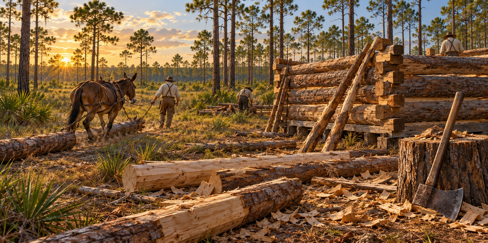

Log Construction Methods
The Craft Behind Every Pioneer Cabin Wall

A log cabin looks simple: four walls, a door, a chimney at one end, logs lying one on another and locked at the corners as if they had fallen into place. They did not. Every log was selected, felled, limbed, dragged to the site, measured and shaped first. Log construction was a craft. It looked like labor. It was both.
Selecting and Preparing the Logs
The cabin began in the forest. Straight timber made it easier to build a sound wall. Pine was abundant in many parts of Florida, but a builder’s choice depended on the trees available nearby, the purpose of the structure and the labor needed to move each log.
Logs were limbed flush with an axe and skidded to the site, often by a mule or ox. At the site many were hewn flat on two sides with a broadaxe, so courses stacked tighter and needed less chinking. Some builders squared all four sides; others left the logs round and relied on careful notching.
The Corner Notch: Where Skill Lived
The corner notch separated the experienced builder from the novice. Cut well, it grew tighter as the weight of the wall pressed down. Cut carelessly, it rocked and let the wall rack out of plumb.
Builders used several kinds of corner joints, including saddle, V and dovetail notches. Each shaped the ends of adjoining logs so the walls held together. Their presence in a surviving building is evidence of a particular construction choice; it does not establish one method as the most common or strongest throughout Florida.
Raising the Walls
Raising a wall meant moving heavy logs into position while keeping the courses aligned. Tools and helpers reduced that effort. Door and window openings were often cut after the logs were placed, and their frames helped hold the wall together. The roof supports then carried the weight above the completed walls.
Floors, Roofs and the Finished Interior
Floors ranged from earth to split timbers and sawn boards. Roofs also varied with the materials available. A finished log house could be more carefully worked than a temporary cabin, with hewn logs, better openings and later additions. The simple appearance of a wall hides the choices made to build it.
What Made Florida’s Version Distinctive
Warm, humid conditions made protection from moisture essential. Piers could lift vulnerable wood above wet ground, and a roof helped keep rain away from the wall. Chinking and daubing sealed gaps but needed maintenance as logs settled and the filling cracked. A cabin’s durability depended on upkeep as well as its initial construction.
Heritage Village in Largo preserves the McMullen-Coachman log house, dated to 1852 in the University of South Florida’s educational photograph collection. Preserved structures let visitors study the actual logs and joints rather than assume that every Florida cabin followed one identical design.
Quick Facts
| Tools | Axes, a broadaxe and hand saws; equipment varied |
|---|---|
| Sill log | Heart pine or cypress |
| Chinking | Wood or stone blocking with soft filler and an outer daubing layer |
| Floors | Split-log puncheon or pit-sawn planks |
| Roof | Timber supports with locally available roof covering |
Did You Know?
Florida cabins stood on piers to keep the bottom log from rotting.
Vocabulary
Scribe: a compass-like tool for copying one log’s shape onto another.
Hewing: flattening a log’s sides with a broadaxe.
Chinking: the clay, moss or wood filling the gaps between logs.
Discussion Questions
1. Why did a corner notch matter so much to a log wall?
2. How did Florida’s climate change the way cabins were built?
Related Articles
FLH-0050 — Building a Homestead
FLH-0051 — Building with What the Land Provided
Sources
Ste. Claire, Dana. Cracker: The Cracker Culture in Florida History. Museum of Arts and Sciences, Daytona Beach, 1998.
Heritage Village of Pinellas County, Largo, FL. McMullen-Coachman log house, circa 1852.
Dudley Farm Historic State Park, Newberry, FL. Living history demonstrations.
Florida Memory. State Library and Archives of Florida. floridamemory.com
NPS — Preservation and repair of historic log buildings